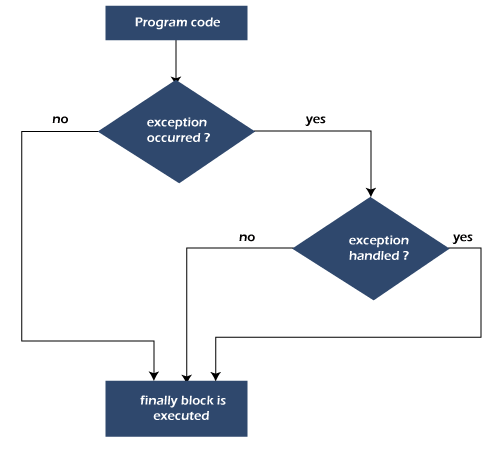
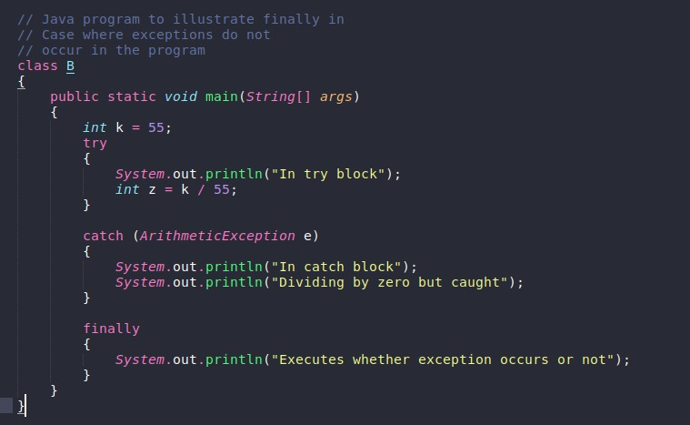
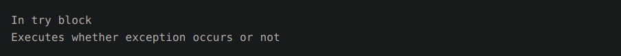
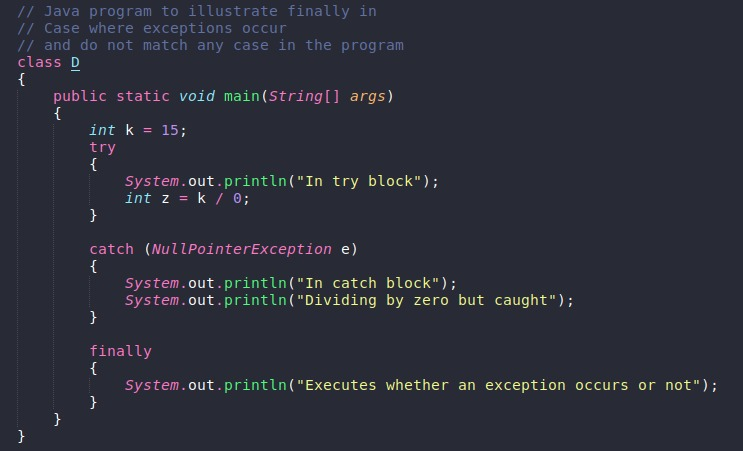
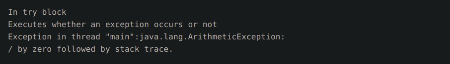
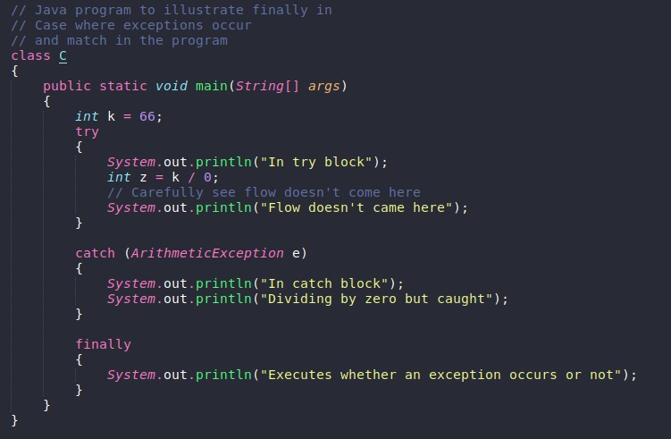
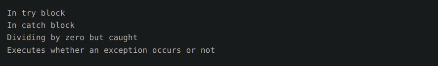

Java Finally blockJava finally block is always executed whether an exception is handled or not. Therefore, it contains all the necessary statements that need to be printed regardless of the exception occurs or not. The finally block follows the try-catch block. Flowchart of finally blockNote: If you don't handle the exception, before terminating the program, JVM executes finally block (if any).Why use Java finally block?
Usage of Java finallyLet's see the different cases where Java finally block can be used. Case 1: When an exception does not occurOutputHere above exception not occurs but still finally block executes since finally is meant
to execute
whether an exception occurs or not. Case 2: When an exception occurr but not handled by the catch blockLet's see the the fillowing example. Here, the code throws an exception however the catch block cannot handle it. Despite this, the finally block is executed after the try block and then the program terminates abnormally. OutputHere above exception occurs and corresponding catch block not found/match but still finally block
executes since finally is meant to execute whether an exception occurs or not or whether corresponding
catch block found/match or not. Case 3: When an exception occurs and is handled by the catch blockExample: Let's see the following example where the Java code throws an exception and the catch block handles the exception. Later the finally block is executed after the try-catch block. Further, the rest of the code is also executed normally. OutputHere, the above exception occurs and corresponding catch block found but still finally block executes
since finally is meant to execute whether an exception occurs or not or whether corresponding catch
block found or not. This article is contributed by Srijan Kumar |